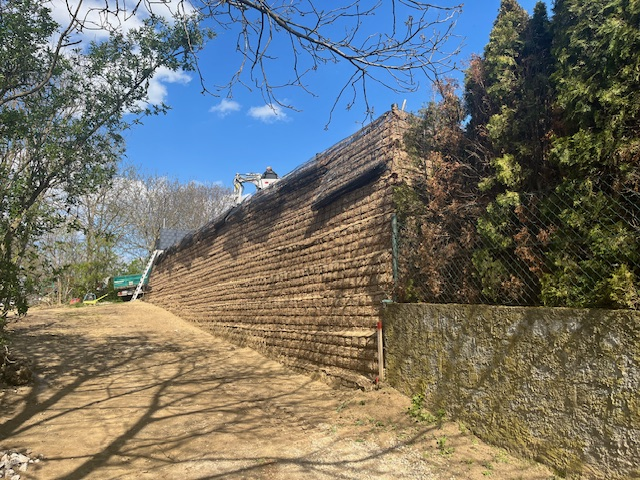
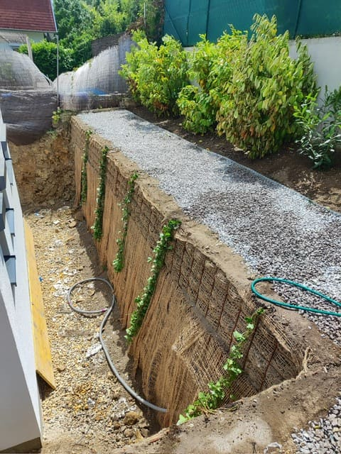
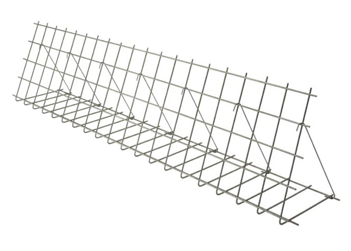
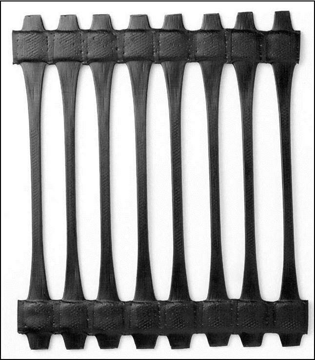
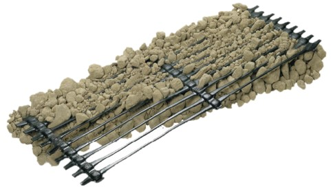
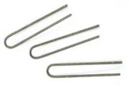
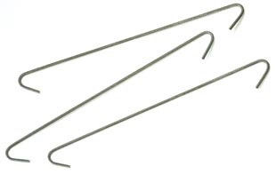
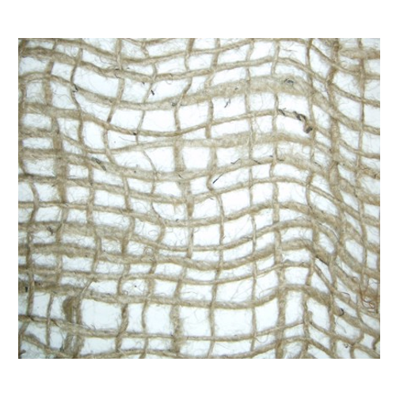
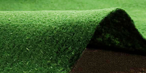

Hopfengasse 2 | 3072 Kasten bei Böheimkirchen

+43 664 4249572

office@brandis.solutions

Die Kombination von Erdmaterialien mit Bewehrungselementen schafft robuste, stabile Strukturen, die selbst bei schwierigen Bodenverhältnissen standhalten.
Durch den Einsatz bewehrter Erde lassen sich Baukosten senken, da weniger zusätzliche Stützkonstruktionen erforderlich sind.
Bewehrte Erde sorgt für dauerhafte Stabilität und Schutz vor Erosion, was die Lebensdauer der regulierten Geländeabschnitte deutlich erhöht.
Bei der Neugestaltung von Hängen bietet bewehrte Erde zusätzliche Stabilität. Durch die Kombination von Erdmaterialien mit Bewehrungselementen wie Geogittern oder Geotextilien werden Abrutschungen verhindert und die Standfestigkeit der Böschung erheblich verbessert.
Wenn Gelände abgeflacht oder neu modelliert wird, sorgt bewehrte Erde dafür, dass die neuen Flächen stabil und tragfähig sind. Dies ist besonders wichtig für den Bau von Straßen, Gebäuden und Infrastrukturen auf unebenem Gelände.
Nach der Geländeregulierung schützt bewehrte Erde die neuen Oberflächen vor Erosion durch Wind und Wasser. Dies ist entscheidend, um die langfristige Stabilität des Geländes sicherzustellen, insbesondere bis die Vegetation vollständig etabliert ist.
Bewehrte Erde kann dazu beitragen, die Tragfähigkeit von Böden zu erhöhen und Setzungen zu minimieren. Dies sorgt für eine stabile Basis, auf der Bauwerke sicher errichtet werden können.
In hügeligen Regionen ermöglicht bewehrte Erde das Anlegen stabiler Terrassen. Diese Technik verhindert das Abrutschen der Böden und sorgt für langlebige und sichere Geländeabschnitte.
Das System besteht aus Bewehrungs-Geogittern, Füllmaterial und Frontseiten-Elementen. Bewehrte Erde bietet eine umweltfreundliche Alternative zu Stahlbeton, besonders bei großen Bauprojekten, bei denen die Umweltauswirkungen entscheidend sind.


Das patentierte System TENAX RIVEL ist eine fortschrittliche Technologie der bewehrten Erde, bei der ein einaxial gestrecktes Geogitter aus HDPE (hochdichtes Polyethylen) aus der TENAX TT SAMP Serie als Bewehrungselement verwendet wird. Dieses System zeichnet sich durch minimale bis keine Umweltauswirkungen aus und wurde vom ITC-CNR (italienisches Institut für Bautechnologie – Nationaler Forschungsrat) für den Bau von steilen, bewehrten Abhängen mit Neigungswinkeln von bis zu 85° zertifiziert.
Bei TENAX TT SAMP Geogittern entspricht die Knotenfestigkeit mindestens dem 1,5-fachen der Langzeit-Beständigkeit, sodass kein zusätzlicher Sicherheitsfaktor erforderlich ist. Dies unterscheidet extrudierte Geogitter von gewebten oder verschweißten Varianten, bei denen die Verbindungsfestigkeit oft nur 20 % der maximalen Zugfestigkeit erreicht.

Chemisch aggressive Umgebungen können die Langzeitbeständigkeit von Geogittern je nach Polymerzusammensetzung beeinträchtigen. HDPE (hochdichtes Polyethylen) ist besonders widerstandsfähig und zeigt auch in extremen Umgebungen keine Schäden. Tests nach EPA-Standards bestätigen, dass TENAX TT SAMP Geogitter keine zusätzlichen Sicherheitsfaktoren für chemische Beständigkeit benötigen.Im Gegensatz dazu kann PET in einer pH-9-Umgebung innerhalb von 20 Monaten bis zu 9 % seiner Beständigkeit verlieren. Die FHWA empfiehlt daher für PET-Materialien ohne Zertifizierung konservative Sicherheitsfaktoren.
Bei bewehrter Erde werden an der Frontseite elektrogeschweißte Baustahlmatten (Ø 8 mm / Gitter 15x15 cm) als Führung und verlorene Schalung eingesetzt. Diese Matten haben keine statische Funktion, erleichtern jedoch die schnelle Installation und sorgen für eine präzise Profilierung des Bauwerks:


Die Baustahlmatte wird zusammen mit fünf Versteifungsankern pro Matte und U-förmigen Pflöcken installiert, die zur Befestigung des Geogitters am Boden erforderlich sind.

Um die Wand des Bauwerks aus bewehrter Erde vor Erosion zu schützen und eine geeignete Oberfläche für die Begrünung bereitzustellen, werden an der Frontseite Biomatten aus Jute verwendet.Die Jutematte bietet einen idealen Nährboden und Wasserspeicher für das Pflanzenwachstum.Je nach Produkt, Rohstoff und Standort verrottet diese biologisch abbaubare Matte normalerweise innerhalb von 1 bis 4 Jahren.

Eine alternative Methode zur Begrünung ist der Einsatz von vorbesätem Biogewebe (Viresco). Dieses Gewebe besteht aus biologisch abbaubaren Viskosefasern, die mit Samen verschiedener Grassorten und Düngemitteln durchsetzt sind. Es fördert ein schnelles, gleichmäßiges Wachstum der Vegetation. Der langsame Abbau des Gewebes unterstützt die Keimung, ohne chemische Rückstände zu hinterlassen oder das Ökosystem zu beeinträchtigen. Die Auswahl und Menge der Samen können an spezielle Planungsanforderungen sowie an Boden- und Klimabedingungen angepasst werden. Zusätzlich kann die Pflanzenabdeckung durch das Einpflanzen von Stecklingen, Wurzelstöcken und Stauden zwischen zwei Bewehrungsschichten erfolgen, um eine gleichmäßige Abdeckung sicherzustellen.